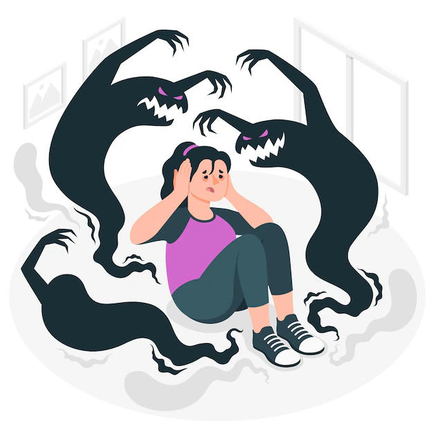

CAUSAS DE LA ESQUIZOFRENIA
La esquizofrenia es un trastorno complejo y multifactorial, y su causa exacta no se comprende completamente. Se cree que una combinación de factores genéticos, neurobiológicos y ambientales contribuye al desarrollo de la esquizofrenia. A continuación, se describen estos factores en más detalle:
Factores Genéticos: La genética desempeña un papel significativo en la esquizofrenia. Las personas que tienen familiares de primer grado (padres, hermanos) con esquizofrenia tienen un mayor riesgo de desarrollar la enfermedad. Sin embargo, la esquizofrenia no sigue un patrón de herencia simple y varios genes parecen estar involucrados. Factores Neurobiológicos: Se han identificado anormalidades en la estructura y función del cerebro en personas con esquizofrenia. Se cree que los desequilibrios en neurotransmisores como la dopamina y la serotonina pueden contribuir a los síntomas de la enfermedad.Factores Ambientales: Aunque la genética juega un papel crucial, los factores ambientales también son importantes. Exposiciones a infecciones virales durante el embarazo, complicaciones durante el parto, estrés temprano y el consumo de sustancias psicoactivas, como el cannabis, pueden aumentar el riesgo de desarrollar esquizofrenia.